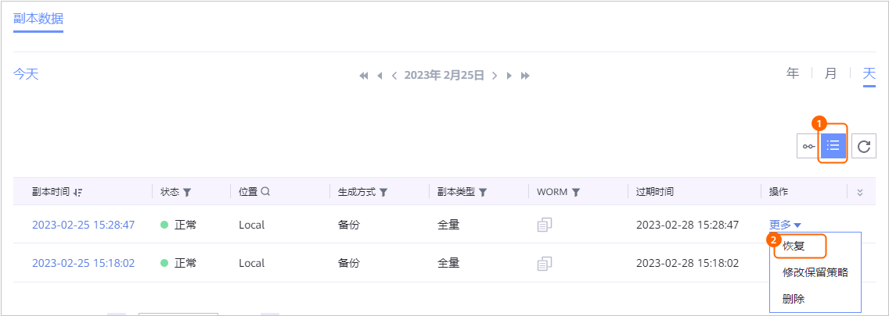
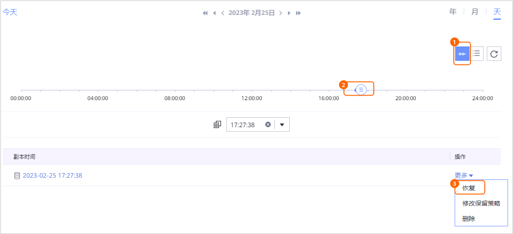

当需要对已备份的华为云Stack GaussDB进行恢复时，可以参考本节恢复华为云Stack GaussDB至原位置或新位置。
背景信息
支持使用备份副本、复制副本进行恢复。支持恢复至原位置（复制副本不支持恢复至原位置）或新位置。
前提条件
- 恢复前请确保恢复目标位置的数据目录剩余空间大于恢复副本缩减前大小，否则恢复将失败。
操作步骤
- 选择“数据利用 > 副本数据 > 云平台 > 华为云Stack GaussDB”。
- 支持以资源维度或以副本维度查找副本，本节以资源维度为例进行说明。
在“资源”页签，根据实例名称查找到需要恢复的实例，并单击实例名称。
- 在“副本数据”页面，依次选择年、月、天找到副本。
当时间下方显示
 ，即表示该月、该天存在副本。
，即表示该月、该天存在副本。 - 找到要恢复的副本，单击其右侧的“更多 > 恢复”。
- 指定副本或时间点进行恢复。
- 指定某个副本或两个副本之间的任意时间点进行恢复。
- 指定某个副本进行恢复

- 指定时间点进行恢复

时间轴上蓝色覆盖区域均可进行时间点恢复，
 表示该时间点存在副本。没有备份日志的时间点无法进行时间点恢复。
表示该时间点存在副本。没有备份日志的时间点无法进行时间点恢复。
- 指定某个副本进行恢复
- 恢复至原位置或新位置。

恢复至新实例时，填写参数建议与原实例保持一致。
- 恢复至原位置
相关参数说明如表1所示。
- 恢复至新位置
- 填写“基本信息”。
- 填写基本参数。参数说明如表2所示。
表2 基本信息参数说明 参数
说明
所属项目
填写恢复到新位置的实例归属的项目。
实例名称
填写恢复到新位置的实例名称。
可用区ID
可用区ID。可选部署在同一可用区或三个不同可用区，可用区之间用逗号隔开。
- 部署在同一可用区：需要输入三个相同的可用区。例如：部署在“cn-north-4a”可用区，则需要在此处输入"cn-north-4a,cn-north-4a,cn-north-4a"。
说明：
第二次和第三次输入是对第一次输入信息的确认。
- 部署在三个不同可用区：需要分别输入三个不同的可用区。
请向企业管理员获取。
规格编码
GaussDB的规格编码。可登录虚拟私有云服务的控制台界面，在原实例的“基本信息”页面，在“数据库信息”中的“性能规格”的值里获取该编码。
磁盘类型
支持“LOCALSSD”、“ULTRAHIGH”两种磁盘类型。
说明：请确认磁盘类型与原实例磁盘类型保持一致。
磁盘容量
将为恢复的实例分配的磁盘空间大小。需要大于或等于原实例。请根据用户的部署方案，设置磁盘容量的取值：
- MCS部署方案：取值范围：（分片数*40GB）~（分片数*16TB），且大小只能为分片数*40的整数倍。
- BMS部署方案：该参数由所选择的规格自动计算，不可指定，即使填写，也不会生效。
- 部署在同一可用区：需要输入三个相同的可用区。例如：部署在“cn-north-4a”可用区，则需要在此处输入"cn-north-4a,cn-north-4a,cn-north-4a"。
- （可选）单击高级配置，填写高级配置参数。参数说明如表3所示。
- 填写基本参数。参数说明如表2所示。
- 单击“私有云信息”，填写私有云信息。参数说明如表4所示。
表4 私有云信息参数说明 参数
说明
虚拟私有云ID
虚拟私有云ID。推荐使用方法1。
- 方法1：登录虚拟私有云服务的控制台界面，在虚拟私有云的详情页面查找VPC ID。
- 方法2：通过虚拟私有云服务的API接口查询，具体操作可参考查询VPC列表。
子网ID
子网的网络ID信息。推荐使用方法1。
- 方法1：登录虚拟私有云服务的控制台界面，单击VPC下的子网，进入子网详情页面，查找网络ID。
- 方法2：通过虚拟私有云服务的API接口查询，具体操作可参考查询子网列表。
安全组ID
指定实例所属的安全组。推荐使用方法1。如果不需要指定安全组，请联系客服申请白名单。
- 方法1：登录虚拟私有云服务的控制台界面，在安全组的详情页面查找安全组ID。
- 方法2：通过虚拟私有云服务的API接口查询，具体操作可参考查询安全组列表。
- 单击“数据库信息”，填写数据库信息。
- 填写基本参数。参数说明如表5所示。
- （可选）单击高级配置，填写高级配置参数。参数说明如表6所示。
表6 数据库信息高级配置参数说明 参数
说明
参数组ID
参数组ID。获取方法请参见获取参数模板列表。未填写该参数时，使用系统默认的参数模板。
实例付费方式
实例的付费方式。支持“不指定”或“按需付费”。
实例自动备份策略
设置华为云Stack GaussDB实例自动备份策略。当数据库的备份方式由XBSA备份转为自动备份时，该字段决定备份的频率。
UTC时区
取值范围为UTC-11:00~UTC+12:00，且只支持整段时间，如UTC+08:00，不支持UTC+08:30。
说明：不选择时，GaussDB默认为UTC时间。
- 填写“基本信息”。
- 恢复至原位置
- 指定某个副本或两个副本之间的任意时间点进行恢复。
- 单击“确定”。